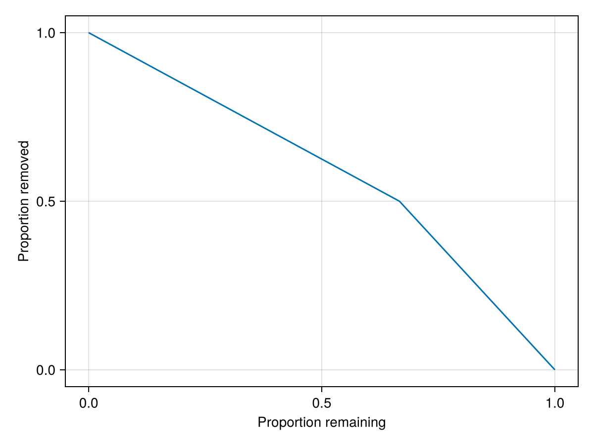

Introduction
The goal of this project is simple: implement different extinction mechanisms for species interaction networks of the type SpeciesInteractionNetworks. For now all extinction are secondary - i.e., after the extinction of one species we will also remove species that no longer have any prey (are unconnected).
note that this project is not officially hosted as a Julia package and so must be installed from github using
Pkg.add https://github.com/TanyaS08/Extinctions.jl. The same holds true forSpeciesInteractionNetworks
Random: Species order is randomly determined.
Hierarchical: Order is determined by the categorical traits of species e.g., feeding mechanism.
Numeric: Order is determined by the numeric 'traits' of species e.g., size.
In this example, we will see how the Extinction.jl package works by creating a network using the SpeciesInteractionNetworks package and start by simulating a random extinction.
using CairoMakie
using Extinctions
using SpeciesInteractionNetworksFirst lets create a network:
species = [:fox, :vole, :hawk, :turnip]
nodes = Unipartite(species)
int_matrix = Bool[
0 1 0 0;
0 0 0 1;
0 1 0 0;
0 0 0 0
]
edges = Binary(int_matrix)
N = SpeciesInteractionNetwork(nodes, edges)A speciesinteractionnetworks.binary speciesinteractionnetworks.unipartite network
→ 3 interactions
→ 4 speciesThe default behaviour of the extinctions() function is to simulate random extinctions until the richness of the entire network is zero. Additionally it will protect all basal species from extinction (i.e., only consumer species) can be removed - but the basal species will eventually be removed as they become disconnected from the 'core' network
extinction_sequence = extinction(N)4-element Vector{SpeciesInteractionNetworks.SpeciesInteractionNetwork{<:SpeciesInteractionNetworks.Partiteness, <:SpeciesInteractionNetworks.Binary}}:
SpeciesInteractionNetworks.SpeciesInteractionNetwork{SpeciesInteractionNetworks.Unipartite{Symbol}, SpeciesInteractionNetworks.Binary{Bool}}(SpeciesInteractionNetworks.Unipartite{Symbol}([:fox, :vole, :hawk, :turnip]), SpeciesInteractionNetworks.Binary{Bool}(sparse([1, 3, 2], [2, 2, 4], Bool[1, 1, 1], 4, 4)))
SpeciesInteractionNetworks.SpeciesInteractionNetwork{SpeciesInteractionNetworks.Unipartite{Symbol}, SpeciesInteractionNetworks.Binary{Bool}}(SpeciesInteractionNetworks.Unipartite{Symbol}([:vole, :hawk, :turnip]), SpeciesInteractionNetworks.Binary{Bool}(sparse([2, 1], [1, 3], Bool[1, 1], 3, 3)))
SpeciesInteractionNetworks.SpeciesInteractionNetwork{SpeciesInteractionNetworks.Unipartite{Symbol}, SpeciesInteractionNetworks.Binary{Bool}}(SpeciesInteractionNetworks.Unipartite{Symbol}([:vole, :turnip]), SpeciesInteractionNetworks.Binary{Bool}(sparse([1], [2], Bool[1], 2, 2)))
SpeciesInteractionNetworks.SpeciesInteractionNetwork{SpeciesInteractionNetworks.Unipartite{Symbol}, SpeciesInteractionNetworks.Binary{Bool}}(SpeciesInteractionNetworks.Unipartite{Symbol}(Symbol[]), SpeciesInteractionNetworks.Binary{Bool}(sparse(Int64[], Int64[], Bool[], 0, 0)))Note we have every network at every time step of the extinction this is useful if we want to e.g., get the robustness of the network. Which we can do using robustness().
robust = robustness(extinction_sequence)0.5we can also plot the extinction curve
f = Figure()
Axis(f[1,1], xlabel = "Proportion remaining",
ylabel = "Proportion removed")
lines!(f[1,1], collect(LinRange(0.0, 1.0, length(extinction_sequence))),
richness.(extinction_sequence)./richness(first(extinction_sequence)))
f